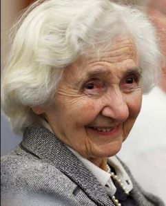

| The following is the last interview that Alice von Hildebrand granted. Shortly
after, she passed away and presented herself to her Lord. She loved God and His Church,
and never was ashamed of her Faith and the Doctrines of the Catholic Church. May she
hear, from the mouth of the Lord, those sweet words "WELL DONE, GOOD AND FAITHFUL
SERVANT, ENTER THE KINGDOM OF MY FATHER". May the Lord give you rest and shine His
eternal Light on you. Website Manager |

Alice von Hildebrand invited me to her home in New Rochelle, New York, this past August. In her well-furnished living room, Alice offered me a seat just a couple of inches from where she sat, our proximity ensuring she would hear my questions. Diminished hearing is understandable when you've lived almost 100 years. Alice then warmly greeted me and offered me a chocolate bar and something to drink.
Meanwhile, I was feeling somewhat overwhelmed by the moment. Here was one of the great Catholic luminaries of the 20th and 21st centuries, and here I was, sitting in her living room. For about 15 minutes I talked with her, soaking in the surrealism of the situation before beginning to ask the questions that I had prepared.
We launched into a few of the major themes of the books the Hildebrand Project — named for her husband Dietrich — produced, starting with beauty and aesthetics. Alice, despite her age, answered my questions deftly. Her brief description of beauty was exactly what I expected from someone who had studied under her famous philosopher-husband, and who herself was well-versed in promoting objective Truth and value.
— "Beauty, like Truth, plays a crucial role in our spiritual
lives," she said,
— "because God is Truth, but He's also beauty. We live in a world that has
been allowed to become vulgarized. It is more important than ever to revalue beauty. God
is infinite beauty. He's Truth, but He's also Beauty."
Pope Francis stresses that the via pulchritudinis (way of beauty) should be a guiding principle in how we live, and in our evangelization. I now understood a bit more why beauty is so important in countering this "vulgarization" and in leading people to God.
Alice met Dietrich at a talk he gave at his New York City apartment, where she also met and formed a lifelong friendship (75 years) with Madeleine Stebbins, the wife of Lyman Stebbins. In 1968, Madeleine and Lyman co-founded "Catholics United for the Faith" (CUF), a lay apostolate that countered the dissent that arose following Vatican II. The Stebbinses served as successive CUF presidents, shortly before my grandfather, Dr. James Likoudis, took the helm.
Around this time, Alice and Madeleine formed a small group of friends, which included the communist-turned-Catholic Bella Dodd, the philosopher Ronda Chervin and Madonna House founder Catherine Doherty. Dorothy Day was another woman who was related to this group of friends. Add to this mix Mother Angelica, who grew very close to Alice over the years, and one wonders about the way people and times providentially align, and how, in this case, these like-minded Catholic women with noble and ambitious hearts came together to strive for the glory of God, each through her own particular charism.
Alice also helped found the organization, Veil of Innocence, which aimed to counter some of the trends taking place in Catholic chastity education. Through this apostolate, Dietrich, Alice and my grandfather collaborated on a little-known book entitled "Sex Education: The Basic Issues and Related Essays", which received a personally-penned recommendation from Mother Teresa of Calcutta. While the book is no longer in print, select essays from it will be republished soon, hopefully next year, in an anthology of my grandfather's many essays on sex education.
Alice was overjoyed when I told her that Cardinal Raymond Burke had recovered from COVID-19. As the delegate of Pope Francis, Cardinal Burke had previously conferred on Alice the honor of Dame Grand Cross of the Pontifical Order of St. Gregory, marking her extraordinary achievements in the pursuit and affirmation of objective Truth. This award is the highest a lay person can receive from the Holy Father.
Alice noted how much she appreciated my coming to meet her. She asked me
if I was married. When I said "no, not yet," she added,
— "It's really wise – wait till you find the right person." I thanked
her for this advice.
— "You will get married", she said, "but you've got to pray
for it." I told her I would be meeting a young lady for the first time that
evening, over dinner.
— "Well, I'm praying that it goes well," Alice said.
— "Marriage is so important. It can give your life a direction upward, or with
the wrong person downward. Marriage is a great sacrament and should be treated as
such."
We proceeded to discuss a book she and her husband co-wrote — Marriage and the Mystery of Faithful Love (Sophia Institute Press) — and the challenge therein that Dietrich offered to Pope Pius XII. He proposed that while procreation is the rightly ordered end of marriage, love and intimacy are the meaning, a corrective to what Dietrich considered an overemphasis in the way the Church's teaching had been presented historically.
— "Procreation is a result of taking the meaning of marriage
seriously," Alice said.
— "Procreation is a result of love flowing over and blossoming. Marriage is
loving this person, and not that person. It is loving this person exclusively as a husband
or wife, and the rest as merely friends. Marriage is not to be taken lightly. In marriage
you share everything."
— "When you give yourself to another person", she added, it is
"I give you my life."
— "Marriage is a great sacrament", she repeated emphatically.
— "It is a challenge every day to love but, in doing so, you come closer to
God."
Alice then asked me if I was enjoying the ever-so-rich chocolate she had given me. I assured her I was, not voicing that it was particularly because it was a token of her hospitality.
Then we discussed her teaching career. Alice served as a professor at Hunter College in New York City for 37 years, regularly refuting relativism and teaching her atheistic students instead about the objectivity of Truth. No wonder such candid replies were always on the tip of her tongue! She took the job at Hunter because Catholic colleges, at the time, would not allow women to teach. Consequently, Alice acted as a bulwark in the secular university system against the pervasive drift toward relativism, and in spite of the persecution she faced from university administrators and other faculty.
I asked her which subject she enjoyed teaching most — ethics, aesthetics,
epistemology, metaphysics or political philosophy. She replied with a recurrent
principle:
— "Truth is one," adding, "They all converge."
I also asked her to touch on the differences between Thomism and Personalism as philosophies. Thomism being systematic, while personalism is an offshoot of phenomenology and tends toward a decidedly nonsystematic mode of philosophy. Personalism also places a unique emphasis and value on the human person, and the meaning motivated by responses to value, which is both objective and yet also distinct for each person.
Dietrich was a pivotal player, along with Pope St. John Paul II, in the
development of personalist philosophy following World War II. When I suggested the
philosophies were two seemingly opposing systems, Alice didn’t accept my proposed
dichotomy. She replied simply and consistently,
— "Is it true, or is it false? This is what matters."
We then discussed Dietrich's widely acclaimed book, The Heart —
previously, The Sacred Heart.
— "When you fall in love with another person, you don't say to this person, 'I
give you my brain,' 'I give you my intelligence,'" she said.
— "You say, 'I give you my heart,' because the heart symbolizes the person.
You know this is going to sound ridiculous. If you go to church and say to God, 'I give you
my intelligence,' it simply doesn't mean anything."
"How does the heart symbolize the person?" I asked her. "What property of the heart makes this symbolism work?"
— "Love," said Alice. "I give you my heart – give you my total self."
We discussed the "new media," specifically the internet, which she said
can be a medium whereby one can reach millions, and insisted that one should tremble from
the responsibility one incurs when they step in front of the camera. I briefly mentioned my
own interest in starting a YouTube channel, which she enthusiastically affirmed.
— "Truth" she exclaimed, while making an arc shape in the air with
her hands, as if framing a headline. "How can one best be receptive to truth?" I asked.
— "You have to go on your knees," she responded succinctly, referring
to the need for prayer.
— "Unless you are on your knees, you may not receive it. Humility.
Humility."
The interview drew to a close. Alice said she was feeling weak but she invited me back again to continue our conversation. Sadly, this opportunity didn't arise before her passing. I feel grateful and honored to have met this extraordinary and tenacious woman — one who courageously stood up to the malevolent powers that attempted to encroach upon the beauty being cultivated in her day, and who, by her example, can teach us all to do similarly, each in our own way.
May Alice von Hildebrand inspire all of us to always seek after the Cross and Resurrection, and to build our lives on the Rock, which is Christ's Catholic Church.
Requiescat in pace, Lily.